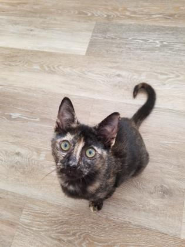

Arlo
Arlo is a shy guy who is still learning how to adjust to his surroundings. He adores other cats, and they truly help him settle into new surroundings, so a home with a sweet, confident cat or two would be a great fit for this guy.
Baby
Baby is a shy sweet cat who likes to sleep all day in 3 or 4 spots he finds around the house. He enjoys sleeping on top of couch cushions, on his favorite soft pillow, or in a kitty bed. He loves getting his head scratched and petted but he does not want to be picked up. He tolerates being around other cats but is a loner and doesn't really play with anyone and just enjoys sleeping on his own. He also has a unique look in that he appears to have eyebrows and has a facial expression like he's surprised! To inquire about adoption, please email his foster at ldbjp@aol.com.
Cece
Cece is s beautiful girl who is ready to live a wonderful life. I'd love a family who would feel comfortable letting me live indoors and outdoors. I think playing and running and rolling in the sunshine is so much fun. I enjoy yummy treats and having 2-legged friends. If you are wanting to add to your family come adopt me today!
Dolly
Hey there everyone! My name is Dolly and if you are looking for the Purr-fect companion, look no further! I am a super sweet, mild mannered lady who is looking for a forever home. My ideal forever home would have a nice lap for my to curl up in, some delicious wet food for me to snack on and other mild mannered cats (and even dogs!) It takes me a bit to warm up to other animals, but as long as they stay out of my face, we can get along. I had a dog friend in my previous home and I sleep curled up against the dog in my foster home. I am also front declawed. For more information or to inquire about adopting, please contact my foster at: meganmarievmiller@gmail.com
Heather
Heather is a senior girl looking for a quiet place to spend her golden years. She is calm and doesn't ask for much - just a spot to sun herself and maybe a few extra helpings of wet food here and there. She's not interested in cuddles or petting, and is a real independent girl, so you might not see her often, especially at first. Heather currently lives in a room with three other mellow cats, so she would likely do well in a home with others a long as they respected her space. If you have a deck, backyard or patio Heather would love nothing more than to bask out there, since she was an outside cat her whole life.
Herbert
Herbert is a cautious young fella who takes a bit of time to warm up to people. He does seem to do wonderfully around other kitties, and would do best in a home with a confident "helper cat" that would aid in giving him confidence to come out of his shell while he adjusts to his new life.
Oven
Turn the dial and set the timer, this Oven is pre-heated! Sweet Oven is a tender-heart searching for a family to call his own. He is quiet and reserved but blossoms slowly. He loves yummy treats and a kind person to tell him how handsome he is. He really finds comfort in other cats and would love one in his new family. Come warm up your life by adopting Oven today!
Poof
Beautiful Poof! This gorgeous young girl came to us from a home that had way too many cats. Having had very little personal interaction with people, she is still very timid when it comes to us big scary humans. Having lived her whole life around other cats, she needs to have other friendly felines around to help her feel comfortable. She would love to go to a wonderful quiet home, with patient, understanding owners, where she could continue to blossom. For more information or to inquire about adopting Poof, please visit her at St. Hubert's in Madison.
Whitley
Whitley is a mellow, quiet guy who is still new to the shelter, and adjusting to being here with us. He seems to do well with other cats, and is currently living in a free roaming situation with a few other kitties. He would likely do bets in a quiet, calm home where he has time to open up and adjust to his new life.